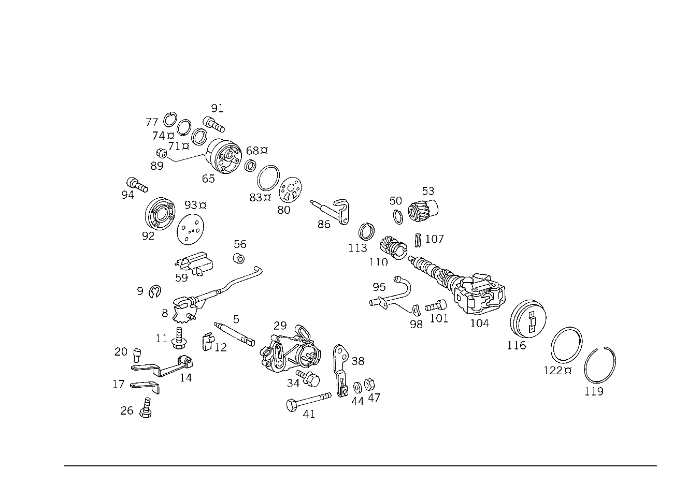

| № | Артикул | Название | Кол. | Примечание |
|---|---|---|---|---|
| 5 | A 126 278 02 10 | - ВАЛ РЕГУЛЯТОРА | - | |
| 5 | A 126 278 03 10 | - Регулировочный вал | 1 | ВЫБОР ДИАПАЗОНА |
| 8 | A 126 270 02 57 | - ПАЗ ВКЛЮЧЕНИЯ | - | |
| 8 | A 126 270 04 57 | - Пластина фиксации сел.АКП | 1 | |
| 9 | N 006799 004001 | - Стопорная шайба | 1 | |
| 11 | N 914020 006002 | - Винт с неспадающей шайбой | 1 | |
| 12 | A 126 271 03 94 | - ВКЛАДКА | 1 | ПО НЕОБХОДИМОСТИ 0.6 MM;NATURAL COLORED |
| 12 | A 126 271 04 94 | - ВКЛАДКА | 1 | ПО НЕОБХОДИМОСТИ 1.2 MM;BLACK |
| 12 | A 126 271 05 94 | - ВКЛАДКА | 1 | ПО НЕОБХОДИМОСТИ 1.8 MM;BLUE |
| 14 | A 126 270 02 78 | - Листовая рессора | 1 | ПЛАСТИНЧАТАЯ ПРУЖИНА ФИКСИРУЮЩЕЙ ПЛАСТИНЫ |
| 17 | A 126 278 03 40 | - ДЕРЖАТЕЛЬ | 1 | ПЛАСТИНЧАТАЯ ПРУЖИНА ФИКСИРУЮЩЕЙ ПЛАСТИНЫ |
| 20 | A 126 991 03 10 | - Палец | 1 | ПЛАСТИНЧАТАЯ ПРУЖИНА ФИКСИРУЮЩЕЙ ПЛАСТИНЫ |
| 26 | N 000933 006121 | - Винт | 1 | ЛИСТОВАЯ РЕССОРА К КАРТЕРУ КП |
| 29 | A 000 545 49 06 | - Переключатель | 1 | ПЕРЕКЛЮЧАТЕЛЬ БЛОКИРОВКИ ПУСКА ДВИГАТЕЛЯ И ФОНАРЕЙ ЗАДНЕГО ХОДА |
| 34 | N 914007 006000 | - Винт с неспадающей шайбой | 2 | ВЫКЛЮЧАТЕЛЬ НА КОРПУСЕ КП |
| 38 | A 126 278 09 20 | - Рычаг | 1 | ВЫБОР ДИАПАЗОНА |
| 41 | N 000931 006114 | - Винт | 1 | РЫЧАГ СЕЛЕКТОРА НА ВАЛУ |
| 44 | N 000125 006421 | - Шайба | 1 | РЫЧАГ СЕЛЕКТОРА НА ВАЛУ |
| 47 | N 000934 006007 | - Гайка | 1 | РЫЧАГ СЕЛЕКТОРА НА ВАЛУ |
| 50 | A 126 994 03 35 | - Пруж. стопорное кольцо | 1 | ВАЛ ОТБОРА МОЩНОСТИ |
| 53 | A 126 274 03 15 | - КОСОЗУБОЕ КОЛЕСО | - | |
| 53 | A 140 274 00 15 | - Цил. косозубая шестерня | 1 | ВЕДУЩИЙ |
| 56 | A 126 278 00 17 | - Ролик | 1 | СТОЯНОЧНАЯ БЛОКИРОВКА |
| 59 | A 126 277 60 77 | - НАПРАВЛ. ЭЛЕМЕНТ | 1 | СТОЯНОЧНАЯ БЛОКИРОВКА |
| 65 | A 126 270 02 97 | - МАСЛЯНЫЙ НАСОС | - | |
| 65 | A 126 270 04 97 | - Масляный насос | 1 | ВТОРИЧН. НАСОС |
| 68 | A 126 277 20 55 | - Уплотнительное кольцо | 1 | |
| 71 | A 126 277 08 55 | - Уплотнительное кольцо | 1 | |
| 74 | A 005 997 84 48 | - Уплотнительное кольцо | - | |
| 74 | A 016 997 37 48 | - Кольцевая прокладка | 1 | |
| 74 | A 016 997 31 48 | - Кольцевая прокладка | 1 | |
| 77 | N 000472 034000 | - Стопорное кольцо | 1 | |
| 80 | A 126 277 13 14 | - Металлическая прокладка | 1 | |
| 83 | A 005 997 85 48 | - Уплотнительное кольцо | - | |
| 83 | A 016 997 32 48 | - Кольцевая прокладка | 1 | ВТОРИЧН. НАСОС |
| 86 | A 126 270 00 59 | - Рычаг | 1 | |
| 89 | N 913016 006000 | - Гайка | 1 | |
| 91 | N 000912 006090 | - Цилиндрич. винт | 3 | |
| 91 | N 000912 006063 | - Цилиндрич. винт | 3 | |
| 95 | A 126 270 03 84 | - Маслопровод | 1 | ЗОЛОТНИК РЕГУЛИРУЮЩИЙ |
| 98 | N 000137 006204 | - Пружинная шайба | 1 | ТРУБКА МАСЛОПРОВОДА НА КОРПУСЕ КП |
| 101 | N 000912 006097 | - Винт | - | |
| 101 | N 000912 006066 | - Винт | 1 | ТРУБКА МАСЛОПРОВОДА НА КОРПУСЕ КП; M6X15 |
| 104 | A 126 270 11 74 | - РЕГУЛЯТОР | - | |
| 104 | A 140 270 00 74 | - РЕГУЛЯТОР | - | |
| 104 | A 126 270 09 74 | - Регулятор | 1 | ЦЕНТРОБЕЖ. РЕГУЛЯТОР |
| 107 | N 001481 003509 | - Распорный штифт | 1 | |
| 110 | A 126 274 04 15 | - КОСОЗУБОЕ КОЛЕСО | - | |
| 110 | A 140 274 01 15 | - Цил. косозубая шестерня | 1 | ЦЕНТРОБЕЖ. РЕГУЛЯТОР |
| 113 | N 912009 020100 | - Пруж. стопорное кольцо | 1 | |
| 116 | A 126 270 00 08 | - Крышка | 1 | ЦЕНТРОБЕЖ. РЕГУЛЯТОР |
| 119 | A 126 994 02 35 | - Пруж. стопорное кольцо | 1 | КРЫШКА ЦЕНТРОБЕЖ. РЕГУЛЯТОРА |
| 122 | A 005 997 87 48 | - Уплотнительное кольцо | - | |
| 122 | A 016 997 39 48 | - Кольцевая прокладка | 1 | КРЫШКА ЦЕНТРОБЕЖ. РЕГУЛЯТОРА |
Позиций: 54 · подписано на схемах: 54 · колесо — плавный зум в курсор, перетаскивание — пан, двойной клик — зум, клик по артикулу — скопировать.